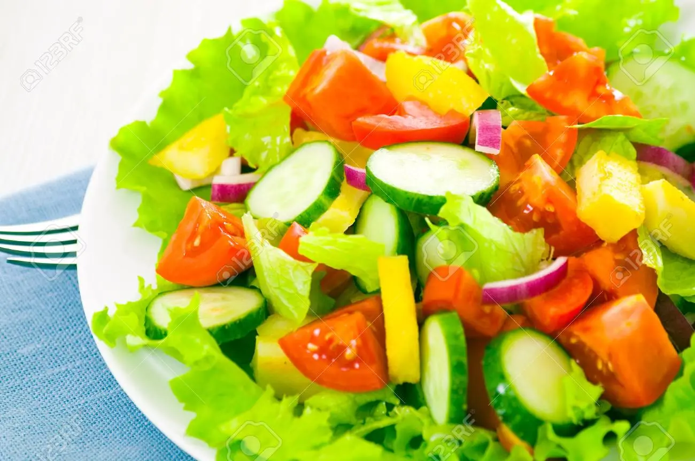

VEGETABLE SALAD

Benefits of vegetable salad
Aside from their natural good taste and great crunchy texture alongside wonderful colors and fragrances,eating a large
serving of fresh,raw vegetables each day can have significant health benefits
Steps to make vegatable salad
- Take a large and clear glass bowl!
- Try adding blanced,lightly steamed or roasted vegetables like broccoli, french beans ,corn,cauliflower,baby corn.
- Add lentils,beans or chickpeas or bean sprouts for more protein
- Grate some of the vegatables for a different texture.
- Add marinated veggies like artichoke hearts for tang ,or other veggies like radish for some pungency
- Swap in your own favorite combination of dried fruits ,nuts and seeds.
- Use fresh coriander or chives instead of parsley.